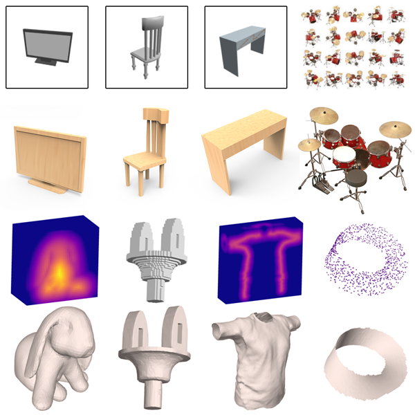
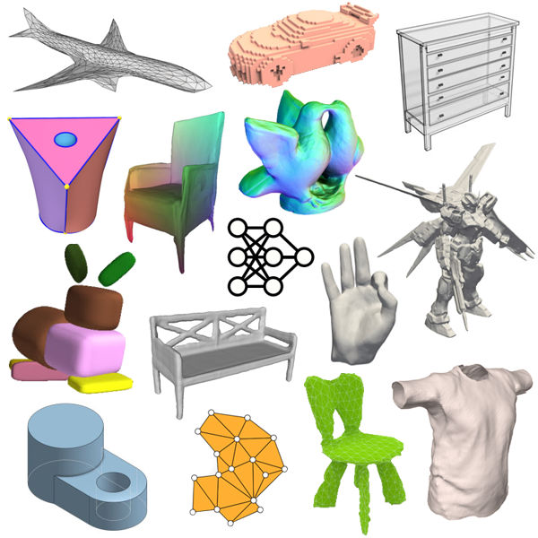

|
|
Zhiqin ChenPh.D. StudentGrUVi lab, school of Computing Science, Simon Fraser Universityzhiqinc at sfu dot ca Google Scholar GitHub CV I am an incoming research scientist at Adobe. I received my PhD and Master's degree from Simon Fraser University, supervised by Prof. Hao (Richard) Zhang, and obtained my Bachelor's degree from Shanghai Jiao Tong University. I have won the best student paper award at CVPR 2020 and best paper award candidate at CVPR 2023. I was an NVIDIA graduate fellowship finalist and received Google PhD Fellowship in 2021. I have also interned at Adobe, NVIDIA, and Google in the past. My research interest is in computer graphics with a specialty in geometric modeling, machine learning, 3D reconstruction, and shape synthesis. |
|||
Publications |
||||
2023 |
||||
|  | Neural Mesh Reconstruction
Zhiqin Chen PhD thesis, Simon Fraser University, 2023 [PDF] |
|||
|  | A Review of Deep Learning-Powered Mesh Reconstruction Methods
Zhiqin Chen PhD depth report [ArXiv] |
|||
| MobileNeRF: Exploiting the Polygon Rasterization Pipeline for Efficient Neural Field Rendering on Mobile Architectures
Zhiqin Chen, Thomas Funkhouser, Peter Hedman, and Andrea Tagliasacchi Accepted to CVPR 2023 CVPR 2023 Best Paper Award Candidate [ArXiv] [GitHub] [Project page] [Video] |
||||
2022 |
||||
| Neural Dual Contouring
Zhiqin Chen, Andrea Tagliasacchi, Thomas Funkhouser, and Hao Zhang Accepted to SIGGRAPH 2022 (journal) [ArXiv] [GitHub] [Video] |
||||
| AUV-Net: Learning Aligned UV Maps for Texture Transfer and Synthesis
Zhiqin Chen, Kangxue Yin, and Sanja Fidler Accepted to CVPR 2022 [ArXiv] [Project page] [Video] |
||||
| CAPRI-Net: Learning Compact CAD Shapes with Adaptive Primitive Assembly
Fenggen Yu, Zhiqin Chen, Manyi Li, Aditya Sanghi, Hooman Shayani, Ali Mahdavi-Amiri, and Hao Zhang Accepted to CVPR 2022 [ArXiv] [GitHub] [Project page] [Video] |
||||
2021 |
||||
| Neural Marching Cubes
Zhiqin Chen and Hao Zhang Accepted to SIGGRAPH Asia 2021 (journal) [ArXiv] [GitHub] [Video] |
||||
| DECOR-GAN: 3D Shape Detailization by Conditional Refinement
Zhiqin Chen, Vladimir G. Kim, Matthew Fisher, Noam Aigerman, Hao Zhang, and Siddhartha Chaudhuri Accepted to CVPR 2021 (oral) [ArXiv] [GitHub] [Video] [GUI demo] |
||||
| Learning Mesh Representations via Binary Space Partitioning Tree Networks
Zhiqin Chen, Andrea Tagliasacchi, and Hao Zhang Accepted to IEEE Transactions on Pattern Analysis and Machine Intelligence (TPAMI) [ArXiv] [GitHub] |
||||
2020 |
||||
| COALESCE: Component Assembly by Learning to Synthesize Connections
Kangxue Yin, Zhiqin Chen, Siddhartha Chaudhuri, Matthew Fisher, Vladimir G. Kim, and Hao Zhang Accepted to 3DV 2020 (oral) [ArXiv] [GitHub] [Video] |
||||
| BSP-Net: Generating Compact Meshes via Binary Space Partitioning
Zhiqin Chen, Andrea Tagliasacchi, and Hao Zhang Accepted to CVPR 2020 CVPR 2020 Best Student Paper Award [ArXiv] [GitHub] [Video] [Project page] |
||||
2019 |
||||
| LOGAN: Unpaired Shape Transform in Latent Overcomplete Space
Kangxue Yin, Zhiqin Chen, Hui Huang, Daniel Cohen-Or, Hao Zhang Accepted to SIGGRAPH Asia 2019 [ArXiv] [GitHub] |
||||

|
BAE-NET: Branched Autoencoder for Shape Co-Segmentation
Zhiqin Chen, Kangxue Yin, Matthew Fisher, Siddhartha Chaudhuri, and Hao Zhang Accepted to ICCV 2019 [ArXiv] [GitHub] |
|||

|
Learning Implicit Fields for Generative Shape Modeling
Zhiqin Chen and Hao Zhang Accepted to CVPR 2019 [ArXiv] [GitHub] |
|||
| BSD-GAN: Branched Generative Adversarial Network for Scale-Disentangled Representation Learning and Image Synthesis
Zili Yi, Zhiqin Chen, Hao Cai, Wendong Mao, Minglun Gong, and Hao Zhang Accepted to IEEE Transactions on Image Processing (TIP) [ArXiv] [GitHub] |
||||
Awards and honorsBest Paper Award Candidate, CVPR 2023Google PhD Fellowship, 2021,2022 NVIDIA Graduate Fellowship Finalist, 2021 Best Student Paper Award, CVPR 2020 Faculty of Applied Sciences Graduate Fellowship, 2018 |
||||
Working experienceAdobe Internship, May - Nov, 2020NVIDIA Internship, May - Nov, 2021 Google Student Researcher, Nov 2021 - Jul 2022 |
||||
Teaching AssistantSpring 2020 - CMPT 743 G101 practices in visual computing IISpring 2019 - CMPT 743 G101 practices in visual computing II Fall 2017 - CMPT 120 D100 introduction to computing science and programming I |
||||
ReviewerGMOD 2018, PG 2019, CVPR 2020, SIGGRAPH Asia 2020, PG 2020, TOG 2020,WACV 2021, ICME 2021, CVPR 2021, IJCAI 2021, IJCV 2021, TVCG 2021, ICCV 2021, 3DV 2021, CVPR 2022, EG 2022, IJCAI-ECAI 2022, SIGGRAPH 2022, SIGGRAPH Asia 2022, TVCG 2022, TIP 2022, CVPR 2023, TOG 2023, IJCAI 2023, SIGGRAPH 2023, ICCV 2023, SIGGRAPH Asia 2023, NeurIPS 2023, |
||||
|
|
||||